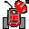
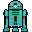

Principe, programmation et règles du jeu de WarbotJ. Ferber - version 2.1 |
|---|
Principe, programmation et règles du jeu de WarbotJ. Ferber - version 2.1 |
|---|
WarBot est un environnement de simulation de comportement de robots se déplaçant et agissant dans un environnement simulé comme le montre la figure ci-desssous.
 Deux équipes comprenant chacune n robots s'affrontent.
Ces robots sont divisés en plusieurs catégories : pour l'instant
il n'existe que trois types de robots: les robots lanceurs de missiles, les
robots eplorateurs et les bases.
Deux équipes comprenant chacune n robots s'affrontent.
Ces robots sont divisés en plusieurs catégories : pour l'instant
il n'existe que trois types de robots: les robots lanceurs de missiles, les
robots eplorateurs et les bases.
Le but des équipes est de détruire les bases du camp adverse avant que l'autre ne le fasse...
Pour cela toutes les stratégies sont possibles !
Le joueur doit définir une équipe, c'est-à-dire définir le comportement de ses robots, sachant que le nombre de robots et leur répartition dans les catégories (lanceurs de missiles, explorateurs et base) sont les mêmes pour tous.
Une fois cette équipe définie et les positions initiales précisées, deux équipes s'affrontent sans intervention humaine. Que le meilleur gagne...
Il existe globalement deux grandes catégories d'entités dans Warbot: les robots et les "objets du monde" qui ne sont pas des robots.
Un robot dans WarBot se compose de deux parties : le corps et la tête.
WarBot fonctionne sur la plate-forme MadKit. Il est donc possible d'utiliser tous les outils de cette plateforme pour surveiller l'évolution des robots.
Dans la version actuelle, il existe exactement trois types de corps de robots:
Ce sont les robots qui se déplacent le plus rapidement de tous, mais en revanche, ils ne disposent d'aucune arme. D'autre part, ils disposent d'une distance de perception plus grande que les lanceurs de missile. Comme tous les robots mobiles, les explorateurs peuvent prendre de la nourriture dans leur "sac" et le déposer près de la base. Ils peuvent aussi manger la nourriture. Dans ce cas, l'énergie de la nourriture vient s'ajouter à leur propre énergie.
Voici leurs valeurs initiales (attention la vitesse mesure en fait la "lenteur" des agents. Plus un agent est rapide, plus sa vitesse est faible. Les agents les plus rapides ont une valeur de vitesse de 1):
Ces robots sont assez lents, mais disposent d'une bonne quantité d'énergie et surtout sont capables de lancer des rockets. Ils comportent 300 rockets (ce qui est assez importants) et peuvent aussi construire de nouvelles rockets en transformant leur énergie en rockets. Ils peuvent aussi transporter et consommer de la nourriture.
 Les bases sont aussi des robots, mais des robots immobiles.
Elles disposent d'une grande énergie initiale, d'une grande capacité de perception et de toutes les caractéristiques de communication des
autres robots. De plus, elles peuvent transformer de la nourriture en nouveaux robots, et ainsi régénérer une armée.
Les bases sont aussi des robots, mais des robots immobiles.
Elles disposent d'une grande énergie initiale, d'une grande capacité de perception et de toutes les caractéristiques de communication des
autres robots. De plus, elles peuvent transformer de la nourriture en nouveaux robots, et ainsi régénérer une armée.
Il existe un ensemble d'entités qui ne sont pas des robots dans warbot. Ce sont les obstacles (murs et arbres), la nourriture et les missiles (rockettes).
Les obstacles servent à délimiter le terrain, et aussi à offrir des protections. Les obstacles peuvent être détruits par des missiles. Iil n'est pas possible de bouger ou de construire des obstacles (pour l'instant).
La nourriture, visualisée sous la forme de "hamburgers", peut être utilisée par les robots de deux manière différente. Ils peuvent soit la consommer pour eux-mêmes et augmenter leurs points de vie, soit la rapporter à la base. Dans ce cas, si cette nourriture est consommée par la base, elle est transformée en "points de ressources" afin de créer de nouveaux robots.
Les missiles (rockettes) sont des entités mobiles qui explosent et enlèvent des points de vie lorsqu'elles rencontrent une entité du monde. Attention: les missile ne peuvent pas détruire celui qui vient d'envoyer le missile, mais ils peuvent (et cela arrive assez souvent) endommager ou détruire des robots de la même équipe s'il viennent à entrer en contact avec ces robots. Cela fait partie des comportements des robots de faire attention à leurs propres rockettes.
Les cerveaux des robots sont des agents madkit qui contrôlent le comportement des "corps" des robots. On peut programmer les cerveaux en Warbot dans deux langages: Java et Python. Très bientôt il sera aussi possible de les programmer en Jess (un langage à base de règles) et en WTE, un petit langage de règles (pas très puissant, mais bien adapté à des enfants..)
Python est un langage fonctionnel et objet qui manipule de manière très élégante des structures de données telles que les listes et les dictionnaires. De plus la version de Python utilisée, jython disponible sur le site www.jython.org, permet d'utiliser toutes les classes Java (la documentation de Python se trouve sur le site)
Jess un système à base de règles qui fonctionne selon le modèle des "moteurs d'inférence": un ensemble de règle s'appliquent sur une base de faits jusqu'à ce que la base soit saturée, c'est à dire que le moteur ne puisse plus déduire de nouveaux faits. Jess, qui est un moteur d'inférence fonctionnant essentiellement en chaînage avant, implémente l'algorithme de Rete. C'est un descendand de OPS5 et CLIPS. Il est très pratique pour décrire des comportements d'agents évolués, en associant un comportement élémentaire à une règle. Il est possible aussi d'ajouter des fonctions et ainsi d'étendre les capacités du langage. Jess est très bien interfacé à Java. Toutes les classes de Java sont directement accessibles depuis Jess. Toutes les informations concernant Jess sont sur le site http://herzberg.ca.sandia.gov/jess/.
Si vous désirez d'autres langages de programmation, faites votre demande sur le forum de Warbot: (il faut que ce langage soit exécutable sur une machine virtuelle Java. Le site http://www.robert-tolksdorf.de/vmlanguages.html et d'autre part que ce langage ait une licence relativement "open" ou tout du moins gratuite pour des raisons non commerciales).
La classe madkit.kernel.Brain constitue le lieu de relation entre les programmes comportementaux des têtes
et les comportements effectifs réalisés par le corps. Elle contient tout ce qu'un cerveau peut effectuer et notamment toutes les actions qu'il peut demander à un corps.
Par la suite d'autres langages de scripting seront disponibles: Scheme (version Kawa), Forth (Fidji), BeanShell (un interpréteur Java), JavaScript, etc...
ATTENTION: dans la version actuelle, les agents Jess ne fonctionnent pas!!
Voici quelques unes des actions et fonctions primitives que
l'on peut utiliser pour programmer des cerveaux. Toutes ces fonctions se présentent comme
des méthodes "public" de la classe warbot.kernel.Brain:
Fonctions d'accès aux attributs internes du robot
Actions de déplacement
Actions de détection
Toutes les communications entre agents (donc entre 'Brains') s'effectuent à l'aide de messages de type "WarbotMessage" dont le contenu est une chaînes de caractères: il est donc impossible de transférer une référence vers un objet à l'aide d'un message.
act à l'agent agent (qui est généralement
un Brain).act et d'argument arg à l'agent
agent (qui est généralement un Brain).act et d'argument arg1 et arg2 à l'agent agent (qui est généralement
un Brain).act et et de tableau d'argument cont à l'agent agent (qui est généralement un
Brain).act à tous les agents jouant le
rôle role dans le groupe group.act et l'argument arg à tous les agents jouant le rôle role dans le groupe
group.act et l'argument
arg1 et arg2 à tous les agents jouant le
rôle role dans le groupe group.act et de tableau d'argument
cont à tous les agents jouant le rôle role dans le groupe group.Les WarbotMessage comprennent un "acte de langage" dénommé par 'act' et un contenu, dénommé par 'content'. Le contenu est
donné sous la forme d'un tableau de chaîne de caractères.
Des fonctions simplifiées permettent d'accéder directement au
premier et au second élément de ce contenu (méthodes getArg1() et getArg2()).
De plus, tous les WarbotMessage contiennent ,en coordonnées relatives par rapport au receveur, la position en x et en y de l'émetteur du message. Il donc possible d'aller vers l'émetteur sans que l'on sache effectivement où il se trouve en coordonnées absolues. Il est possible d'obtenir les informations correspondant à un WarbotMessage de la manière suivante:
Attention: un 'Brain' ne peut pas envoyer et recevoir d'autres messages que des WarbotMessage. Même les mécanismes d'envoi de messages traditionnels (sendMessage, broadcastMessage, etc..) ont été réécrits pour ne pas permettre de manipuler d'autres types de messages.
Il est possible d'afficher une information à l'écran sous la forme d'une bulle. Cette bulle permet de visualiser des messages de 26 caractères au plus (ce n'est pas très grand, mais bon...).
Les Robots de Warbot récupèrent leur perception par la primitive Percept[] getPercepts() qui retourne un tableau comprenant toutes les perceptions du robot qui sont perceptibles par lui c'est-à-dire qui se trouve dans son rayon de perception.
Un percept est une représentation individuelle de l'objet perçu. Cela signifie que toutes les informations qui se trouvent dans le percept ne sont pas seulement relatives à la chose perçues, mais elles prennent en compte aussi le percevant et la relation qui les unit. Par exemple, un percept comprend une distance et une direction qui sont données relativement au robot percevant.
Voici les différentes méthodes associées à un percept:
Voici un petit exemple de l'utilisation de percepts. Si l'on voit de la nourriture alors on fait quelque chose, sinon si on voit un explorateur qui est d'une autre équipe que la nôtre, alors on fait autre chose, etc..
Percept[] percepts = getPercets();
for (int i=0;i<percepts.size();i++){
Percept p = percepts[i];
if (p.getPerceptType().equals("Food"))
// faire quelque chose
else if (p.getPerceptType().equals("Explorer") &&
!p.getTeam().equals("MyTeam"))
// faire autre chose
} |
Note: A chaque unité de temps, l'ensemble des percepts est mémorisé. De ce fait, on peut appeler la méthode getPercept autant de fois qu'on le désire sans que les calculs soient pénalisés.
Voici les correspondances entre les types de percepts tels qu'ils sont retournés par la méthode getPerceptType(), la classe Java correspondante et leur nom usuel.
| Type de percept | Classe Java | Remarques |
|---|---|---|
| Home | warbot.kernel.Home | Base |
| RocketLauncher | warbot.kernel.RocketLauncher | Lanceur de missile |
| Explorer | warbot.kernel.Explorer | Explorateur |
| Rocket | warbot.kernel.Rocket | Missile |
| Obstacle | warbot.kernel.Wall et warbot.kernel.PalmTree | Obstacle |
| Food | warbot.kernel.Hamburger | Nourriture |
On pourra noter d'une part la simplicité des comportements, et d'autre part que les comportements collectifs sont très réduits (voire inexistant) dans ces exemples. A vous de jouer...
Les cerveaux des robots sont des AbstractAgent au sens de MadKit. ils disposent ainsi de toutes les fonctionnalités des agents MadKit!! (création de groupes, demande d'adhésion à un groupe en jouant un rôle, récupération de tous les agents jouant un certain rôle dans un certain groupe, etc..). Pour plus d'information sur la manière de programmer en MadKit. Lire la documentation de MadKit concernant la programmation des agents.
La Javadoc du dossier WarBot donne toutes les API des classes utilisées par Warbot.
Le tutoriel de Warbot présentant la manière de réaliser ses premiers pas en Warbot.
Warbot est un projet dédié à l'étude des coordinations entre agents et notamment des procédés de coopération/compétition.
De ce fait, tous les procédés tendant à utiliser des failles de la plate-forme pour gagner sont considérées être des "tricheries" "et sont donc interdites.
Il est interdit de faire des sous-classes de corps (de body...). On a uniquement le droit de programmer des "cerveaux" d'agents (brains) soit en sous-classant la classe Brain soit en utilisant les langages de Scripts.
Il existe un certain nombre de paramètres associés aux corps des robots. Ces paramètres doivent être conservés en l'état et ne doivent pas être modifiés directement par un programme. En particulier les paramètres suivants ne doivent en aucun cas être modifiés:
Les robots ne doivent communiquer que par l'intermédiaire de messages de type WarbotMessage et éventuellement de traces laissées au sol (dans de futures versions). Tout autre mécanisme de communication: tubes (pipes), sockets, fichiers, objets partagés, etc.. sont considérés comme de la tricherie.
Fondamentalement les agents sont supposées être distincts les uns des autres. Il ne peuvent pas partager d'informations. De ce fait il est interdit pour un agent (un corps ou une tête) d'avoir une référence directe vers un autre agent ou d'avoir une référence vers un objet partagé avec un autre agent. Normalement tout est fait pour empêcher cela, mais on connaît deux ou trois trucs qu'il serait possible de faire, et cela est interdit.
Il est interdit de créer d'autres agents que les robots, sauf si ces agents ne servent qu'à "réfléchir" et font donc partie des cerveaux des robots.
Il est interdit de créer d'autres agents que des robots qui permettraient à des robots de communiquer par des messages autre que des WarbotMessage.
Warbot fonctionne par un scheduler qui passe en revue tous les robots. L'unité de temps est donc le temps que l'on attribue à un robot pendant un tour. Attention: tous les robots n'ont pas accès au même nombre d'unités de temps. Chaque corps impose sa manière de gérer le temps. {{à finir et à approfondir}}
D'une manière générale, un robot peut:
En revanche un robot est limité par l'ensemble des actions physiques qu'il peut accomplir:
Il est interdit de bloquer le fonctionnement des autres robots en faisant une boucle infinie.
[Fer 95] J. Ferber, les systèmes multi-agents, InterEditions, 1995.